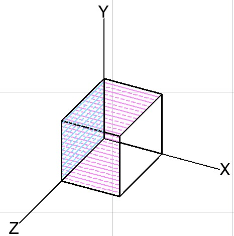

Instrucciones »
Se coherente con tus unidades y no refresques la página hasta que termines. Este es un proyecto en DESARROLLO, cualquier fallo o sugerencia favor de contactar con el autor.
Zona de dibujo.
Primeramente en la esquina superior izquierda tenemos 3 opciones de vistas según el plano que se desee visualizar, se cuenta con un plano (X,Y) uno (X,Z) y (Z,Y), como se muestra en la imágen. (si vas a trabajar en 2D se recomienda el plano (X,Y))
Cuando un elemento sea agregado éste se dibujara en las tres vistas, según sus componentes, por ejemplo, si hay una que sea paralela al eje X está no se dibujara en la vista (Z,Y) porque no tiene componentes ni en Z ni en Y. Ahora en la esquina superior derecha se encuentra el menú de las opciones gráficas, las opciones selecionadas serán dibujadas.
En la parte inferior derecha se tiene un side-bar que nos sirve para ajustar la escala del dibujo, si lo movemos a la izquierda la imágen se hace mas chica y si lo movemos a la derecha se agranda, por ser una aplicacion web se recomienda no abusar de este recurso.
Agregar barras.
Lo primero es entar al menú llamado Barras, luego nos va a pedir el módulo de Elasticidad y el área de la sección, si eres nuevo en el mundillo de las estructuas se recomienda marcar como constante ambos. Seguido se encuentran unos selectores para el nodo inicial y el final de la barra, en un principio están vacios pero una vez que se dibuje una barra se agregaran su nodo inicial y su nodo final, se recomienda activar en los ajustes graficos el numero de nodo.
Finalmente se cuenta con los espacios para introdicir las coordenadas de los los nodos de inicio y final de la barra. Es decir hay 2 formas de agregar barras con los selctores cuando los nodos de la barra ya han sido usados y con coordenas cuando son nodos nuevos. La barra sera de 2 colores, verde el lado inicial y cafe el final.(si se trabaja en 2D poner 0 en la coordenada Z)
Agregar Cargas.
Lo primero es entar al menú llamado Cargas, ahora bien, si quieres que se dibujen las cargas debes seleccionar la opcion en el menú de ajustes gráficos, una vez en el menú Cargas se debe seleccionar el nodo donde se aplicara, el valor de la carga (cuyas unidades sean compatibles con tu módulo de Elasticidad) y seleccionar la dirección.
Hay una consideracion que debe hacerse al momento de aplicar una carga, cuando se aplique una carga en una dirección mínimo una de las barras que llegan al nodo cargado debe tener una componente en la misma dirección de la carga, es decir, si mi carga va en X mínimo una de las barras que llegan al nodo debe tener una componente en X, y lo mismo aplica para la dirección Y y la dirección Z; y no es porque no se pueda, el detalle está en que se tendría que "resistir" atraves de momentos lo que implica otro tipo de análisis, lo que pasaría si se pone una carga así es que no se tomara en cuenta. (la opción de marcos esta en desarrollo)
Agregar Apoyos.
Lo primero es entrar al menú llamado Apoyos, ahora bien, si quieres que se dibujen los apoyos debes seleccionar la opción en el menú de ajustes gráficos, después se bebe seleccionar el nodo donde estará el apoyo y se marcaran las casillas de las restricciones de desplazamiento que tendrá dicho nodo, en caso de seleccionar las 3 direcciones se dibujara un cuadrado, si se selecciona 1 o 2 se dibuja un círculo y se podrá consultar las restricciones de desplazamiento en la tabla correspondiente.
Con el fin de optimizar la ejecución, si se establecion un apoyo para un nodo y después se vuelve a establecer otro apoyo para el mismo nodo pero cambiando las restricciones, el apoyo tomará las restricciones de la última modificación.
Modificar barras.
Lo primero es entrar al menú llamado Barras y dar click al botón modificar, ahora bien, sólo se puede modificar el área de la sección y el módulo de elasticidad, esto porque el código se alargaría, y esto al ser un proyecto en desarrollo aún no se sabe sí sea muy pesado para los navegadores, entonces en caso de haberse equivocado y se desee borrar una barra lo que se puede hacer es cambiar su área a 0 cero, esto hace que no se tome en cuenta durante el cálculo pero seguira estando en el dibujo.
Modificar cargas.
Lo primero es entrar al menú llamado Cargas y dar click al botón modificar, a las cargas se les puede modificar la magnitud y la dirección, lo único que no se puede es el nodo donde esta aplicada, si se pretende borrar una carga basta con que a la hora de modificarla se ponga 0 cero en el valor de su magnitud.
Modificar Apoyos.
Basta con realizar el mismo proceso que en Agregar apoyos seleccionando el nodo del apoyo que se desea modificar.